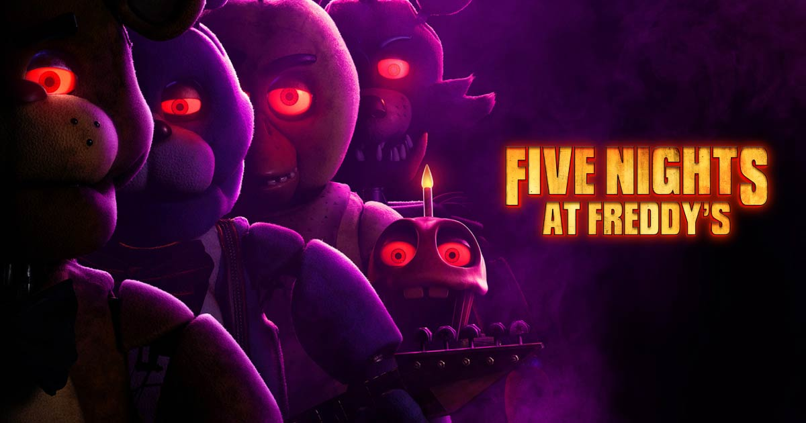
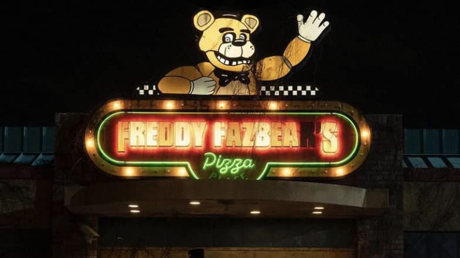

Czy zdołasz przetrwać pięć nocy? Przerażające zjawisko horrorów przekształca się w mrożące krew w żyłach
wydarzenie kinowe, gdy Blumhouse – producent M3GAN, The Black Phone i The Invisible Man – przenosi Five Nights
s at Freddy's na duży ekran. Film opowiada o zmartwionym ochroniarzu, który rozpoczyna pracę w pizzerii Freddy
Fazbear's Pizza. Spędzając pierwszą noc w pracy, zdał sobie sprawę, że nocna zmiana u Freddy'ego nie będzie łatwa.
reżyseria - Emma Tammi, scenariusz - Emma Tammi, Scott Cawthon, gatunek - Horror, Komedia, produkcja - USA, premiera - 26 października 2023 (Światowa) 27 października 2023 (Polska premiera kinowa)

Pięć koszmarnych nocy - Trailer
Pięć koszmarnych nocy - Film po angielsku z reklamami, polskie napisy
[Fullscreen]
Informacje o grach fnafa
Wersja
Poziom Trudności
Krótki Opis
Five Nights at Freddy's
5/10
Pierwsza gra, w której gracz pilnuje pizzerii przed atakami animatroników. Podstawowa i wprowadzająca do serii
Five Nights at Freddy's 2
7/10
Prequel do pierwszej części, z nowymi animatronikami i mechanikami, takimi jak maska ochronna
Five Nights at Freddy's 3
6/10
Kontynuacja historii, skupiona na elementach paranormalnych. Gracz musi korzystać z systemu kamer i pułapek
Five Nights at Freddy's 4
8/10
Akcja dzieje się w domu gracza. Nowe mechaniki obejmują słuchanie dźwięków, aby zidentyfikować zagrożenia
Five Nights at Freddy's: Sister Location
7/10
Gracz przenosi się do nowego miejsca o nazwie Circus Baby's Entertainment and Rental. Gra skupia się na bardziej skomplikowanych zadaniach
Freddy Fazbear's Pizzeria Simulator
6/10
Gracz zarządza własną pizzerią, ale ta gra łączy elementy zarządzania i tradycyjnej rozgrywki FNaF. Obejmuje również fabułę i tajemnice